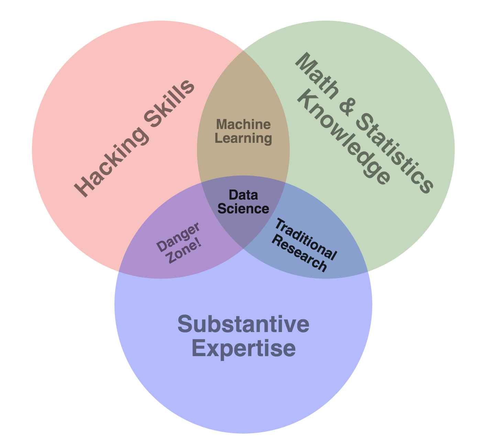
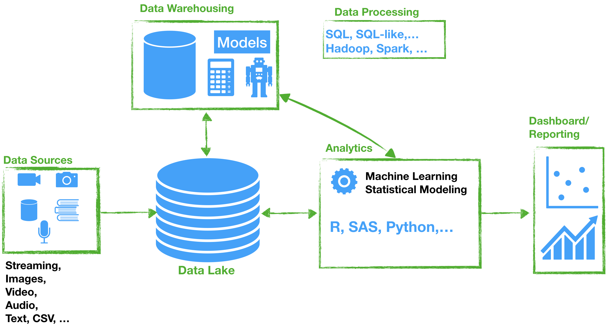
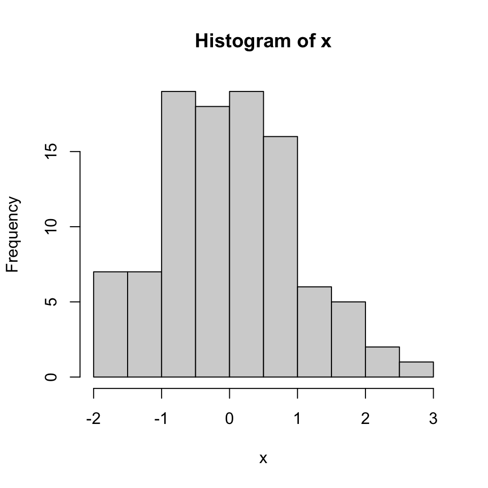

Practice with basic R programming tools such as for loop, data frames, etc.
Data Science?
The use of data as evidence is crucial but, it is not something novel. If we examine a definition of the field of statistics, we can observe that is given as four subtopics:
Data Collection
Data Analysis
Results Interpretation
Data Visualization
Originally, statistics was viewed as the analysis and interpretation of information about states. And science is understood as organized knowledge in the form of testable explanations and predictions about the universe.
So, what is data science? Data science is more than just using statistics and data to answer scientific questions.
Nowadays, data science is viewed as the use of various sources of data to extract knowledge and provide insights using multiple skills including programming, math and statistics, and communication.
Venn diagram by Drew Conway provides a visualization on data science.

Data Science Venn diagram by Drew Conway
Typical examples of data science projects:
Market analysis What product will sell better in conjunction with another popular product
Market segmentation Are there distinguishable features that characterize different groups of sales agents, customers or businesses?
Advertising and marketing What advertisement should be placed on what site?
Fraud How to detect if a retail/finance transaction is valid or not?
Demand forecasting What is the demand for a particle service at a specific time/place?
Classification Emails classification (spam vs. valid email)
Tools for Data Science
Data science helps managers, engineers, policymakers, and researchers - almost everybody - to make informed decisions based on evidence from data. Computers and technologies have empowered how much data we can store, manipulate, and analyze. To enable these functions, technologies and tools are developed to help us to be more productive and efficient when conducting data science projects.

Data Science Workflow
The technologies deployed in the analytics and data science have advanced very fast and multiple open source projects exist, for example:
RStudio is an integrated development environment (IDE) for R and Python, with a console, syntax-highlighting editor that supports direct code execution, and tools for plotting, history, debugging and workspace management. It compiles and runs on a wide variety of UNIX platforms, Windows and MacOS. There is an open source license that you can install for free from here: download RStudio
Quarto provides an authoring framework for data science reporting. It creates dynamic content with Python, R, Julia, and Observable and high quality reports that can be shared with an audience. Quarto (.qmd) documents are fully reproducible and support dozens of static and dynamic output formats.
Install your R/RStudio
For TFDS, we will be using RStudio Server hosted at UWF. This is the link https://rstudio.hmcse.uwf.edu/. Login using your UWF account.
You don’t need to install R and RStudio on your computer. But, you are welcome to do so if you wish so.
Getting started with R
🛎️ Recordings of this week provide lessons about R, RStudio, and GitHub. The following will be covered:
Summary statistics, random number generation. An example:
# a set of valuesvec1=c(1,21,50,80,45,0)# summationsum(vec1)
[1] 197
# arithmetic meanmean(vec1)
[1] 32.83333
# standard deviationsd(vec1)
[1] 31.30122
# summary statisticssummary(vec1)
Min. 1st Qu. Median Mean 3rd Qu. Max.
0.00 6.00 33.00 32.83 48.75 80.00
# variancevar(vec1)
[1] 979.7667
# quantilequantile(vec1,0.5)
50%
33
# 100 Standard normal random numbersx=rnorm(100,mean=0,sd=1)# histogramhist(x)

Functions, conditional statements: if, for and while. A code example:
# create your own function myfunction=function(){return(print("Hello there!")) }# if statementlucky.number=100if(lucky.number<=54){print("You win!") }else{print("You lost!")}
[1] "You lost!"
🛎 🎙️ Recordings on Canvas will cover more details and examples! Have fun learning and coding 😃! Let me know how I can help!